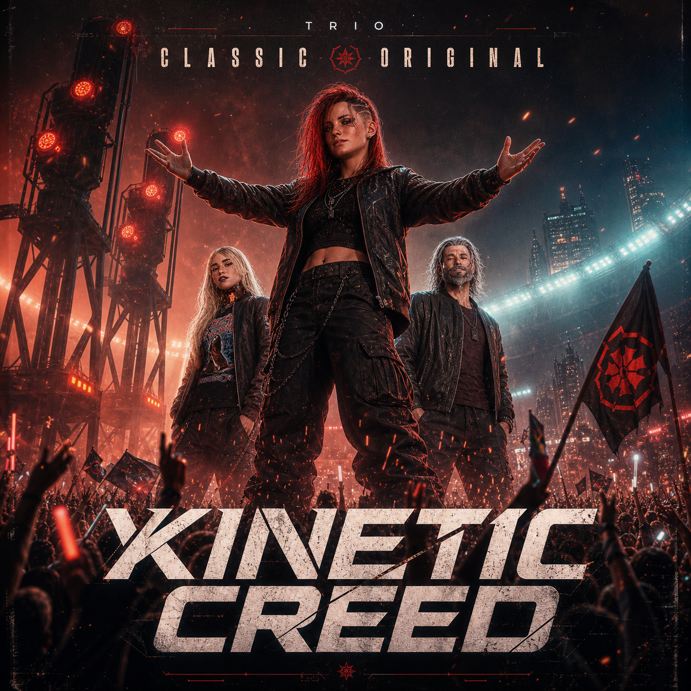
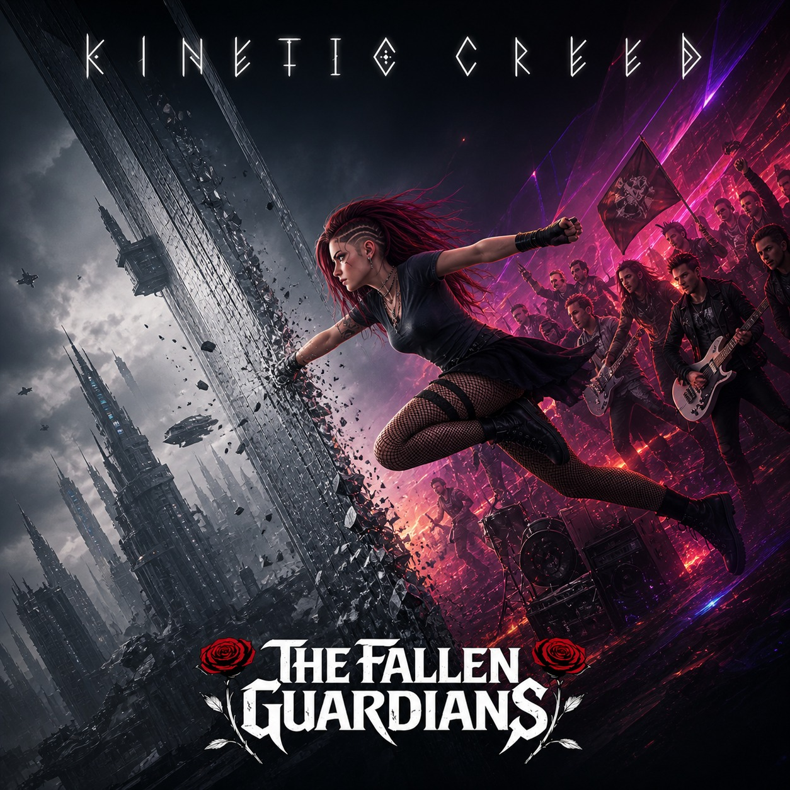
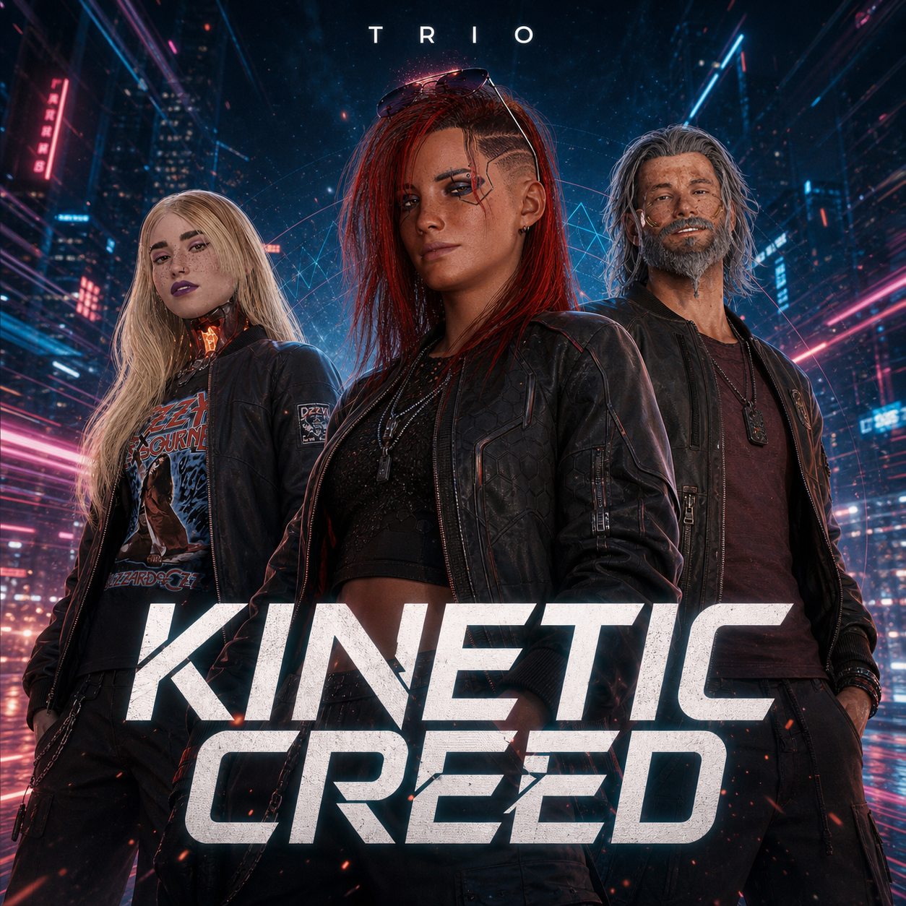
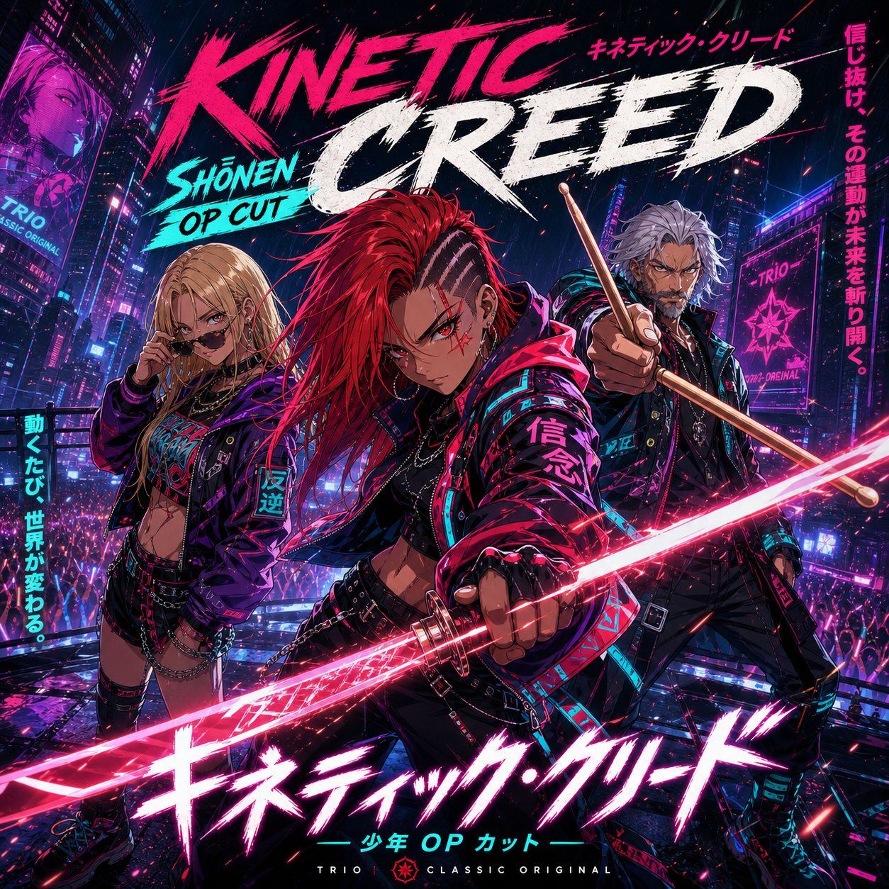
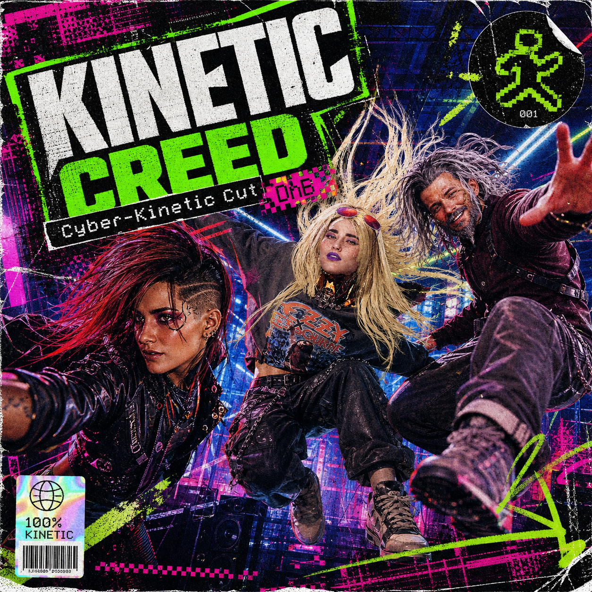

THE RELIC V1.0

Kinetic Creed - The Classic
You wanted it, Sky, now here is a worthy page for this relic you adore that much.
0:00 / 0:00
// IDENTIFIED MUTATIONS

M-01
Kinetic Creed (Original Remake)
Worthy successor to a prototype that will change the course of the Fallen Guardians' careers
M-02
Kinetic Creed (Freestyle Rap Cut)
Inspired by the heyday of rap in the '90s, a freestyle remix — hell yeah, gangsta man!
M-02
Kinetic Creed (Shonen OP Cut)
Just for the sheer fun of it, imagine this as a badass anime opening. Seriously, doesn't it make you want to see our favorite trio slicing and dicing their enemies to pieces with katana and rifles?
M-02